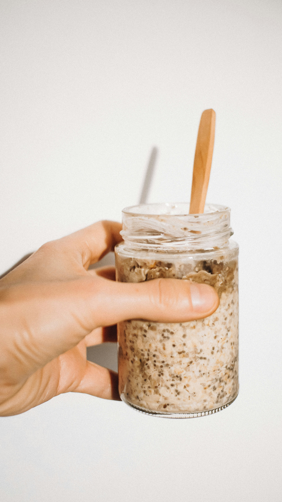

An overnight oats recipe for 2!

Overnight Oats
This is a quick and easy recipe for 2 to whip up the night before
It will ensure you have a tasty and filling breakfast in the morning
Ingredients
- 100g oats
- 20g chia seeds
- 250g milk
- 125g greek yoghurt
- 2 tbsp honey
- 1 mashed banana
- 1 tsp vanilla extract
- A sprinkling of cinnamon
Steps to make a tasty bowl of overnight oats
- Mash the banana with a fork until it is in a puree like form
- Add the banana to your container, along with the rest of the ingredients
- Stir thoroughly with a fork until everything is combined
- Place in the fridge to have in the morning
- Before eating, consider topping with crushed walnuts, dark chocolate chips, or blueberries!
Back to Home Page